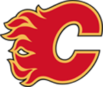

Click on the buttons for more information


MONTREAL CANADIENS

The Montreal Canadiens are a professional ice hockey team based in Montreal, Quebec. They are members of the Atlantic Division of the Eastern Conference of the National Hockey League (NHL).
The club’s official name is le Club de hockey Canadien. The team is frequently referred to in English and French as the Habs. French nicknames for the team include Les Canadiens (or Le Canadien), Le Bleu-Blanc-Rouge, La Sainte-Flanelle, Le Tricolore, Les Glorieux (or Nos Glorieux), Le CH, Le Grand Club and Les Habitants (from which "Habs" is derived).
Founded in 1909, the Canadiens are the longest continuously operating professional ice hockey team worldwide, and the only existing NHL club to predate the founding of the NHL. One of the oldest North American professional sports franchises, the Canadiens’ history predates that of every other Canadian franchise outside football as well as every American franchise outside baseball and the National Football League’s Arizona Cardinals. The franchise is one of the "Original Six" teams, a description used for the teams that made up the NHL from 1942 until the 1967 expansion. The team’s championship season in 1992–93 was the last time a Canadian team won the Stanley Cup.
The Canadiens have won the Stanley Cup more times than any other franchise. They have won 24 Stanley Cups, 23 of them since the founding of the NHL and 22 of them since 1927, when NHL teams became the only ones to compete for the Stanley Cup. On a percentage basis, as of 2014, the franchise has won 25.3% of all Stanley Cup championships coninformation_teamed after the Challenge Cup era, making it the second most successful professional sports team of the traditional four major sports of Canada and the United States, behind only the Boston Celtics.
Since 1996, the Canadiens have played their home games at Bell Centre, originally known as Molson Centre. The team previously played at the Montreal Forum which housed the team for seven decades and all but their first two Stanley Cup championships.
OTTAWA SENATORS

The Ottawa Senators are a professional ice hockey team based in Ottawa, Ontario, Canada. They are members of the Atlantic Division of the Eastern Conference of the National Hockey League (NHL). The Senators play their home games at the 17,373 seat Canadian Tire Centre which opened in 1996 as the Palladium.
Founded and established by Ottawa real estate developer Bruce Firestone, the team is the second NHL franchise to use the Ottawa Senators name. The original Ottawa Senators, founded in 1883, had a famed history, winning 11 Stanley Cups and playing in the NHL from 1917 until 1934. On December 6, 1990, after a two-year public campaign by Firestone, the NHL awarded a new franchise, which began play in the 1992–93 season. The current team owner is Eugene Melnyk, and in 2016, the franchise was valued by Forbes magazine at US$355 million.
The Senators have qualified for the Stanley Cup playoffs in 15 of the past 19 seasons; have won four division titles and, in 2003, the Presidents’ Trophy; and have appeared in the 2007 Stanley Cup Finals. The club has been regularly represented in the top half in attendance in the NHL.
TORONTO MAPLE LEAFS

The Toronto Maple Leafs (officially the Toronto Maple Leaf Hockey Club) are a professional ice hockey team based in Toronto, Ontario. They are members of the Atlantic Division of the Eastern Conference of the National Hockey League (NHL). The club is owned by Maple Leaf Sports & Entertainment, Ltd. and are represented by Chairman Larry Tanenbaum. With an estimated worth of US $1.1 billion in 2016 according to Forbes, the Leafs are the third most valuable franchise in the NHL, after the Montreal Canadiens and the New York Rangers. The team’s broadcasting rights are split between BCE Inc. and Rogers Communication. For their first 14 seasons, the club played their home games at the Mutual Street Arena, before moving to Maple Leaf Gardens in 1931. The club moved to their present home, the Air Canada Centre in February 1999.
The Maple Leafs were founded in 1917, operating simply as Toronto and known then as the Toronto Arenas. Under new ownership, the club was named the Toronto St. Patricks in 1919. In 1927 the club was purchased by Conn Smythe and renamed the Maple Leafs. A member of the "Original Six," the club was one of six NHL teams to have endured through the period of League retrenchment during the Great Depression. The club has won thirteen Stanley Cup championships, second only to the 24 championships of the Montreal Canadiens. The club’s history includes two recognized dynasties, from 1947 to 1951; and from 1962 to 1967. Winning their last championship in 1967, the club’s 50-season drought between championships is the longest current streak in the NHL.
The Maple Leafs have rivalries with three NHL franchises, the Detroit Red Wings, the Montreal Canadiens, and the Ottawa Senators. The club is affiliated with two minor league teams, the Toronto Marlies of the American Hockey League, and the Orlando Solar Bears of the ECHL.
WINNIPEG JETS
The Winnipeg Jets are a professional ice hockey team based in Winnipeg, Manitoba, Canada. They are members of the Central Division of the Western Conference of the National Hockey League (NHL). The team is owned by True North Sports & Entertainment and plays its home games at Bell MTS Place.
The Jets began play as the Atlanta Thrashers in the 1999–2000 NHL season. True North Sports & Entertainment then bought the team in May 2011 and relocated the franchise from Atlanta, Georgia to Winnipeg prior to the 2011–12 season (the first NHL franchise to relocate since the Hartford Whalers became the Carolina Hurricanes in 1997). The team was renamed the Jets after Winnipeg’s original WHA/NHL team, which relocated after the 1995–96 season to become the team now known as the Arizona Coyotes.
EDMONTON OILERS

The Edmonton Oilers are a professional ice hockey team based in Edmonton, Alberta. They are members of the Pacific Division of the Western Conference of the National Hockey League (NHL).
The Oilers were founded on November 1, 1971, with the team playing its first season in 1972, as one of the twelve founding franchises of the major professional World Hockey Association (WHA). They were originally intended to be one of two WHA teams in Alberta (the other one being the Calgary Broncos). However, when the Broncos relocated to Cleveland, Ohio, before the WHA’s first season began, the Oilers were renamed the Alberta Oilers. They returned to using the Edmonton Oilers name for the following year, and have been called that ever since. The Oilers subsequently joined the NHL in 1979 as one of four franchises introduced through the NHL merger with the WHA.
After joining the NHL, the Oilers went on to win the Stanley Cup on five occasions: 1983–84, 1984–85, 1986–87, 1987–88 and 1989–90. Along with the Pittsburgh Penguins, the Oilers are tied for the most championships won by any team since the NHL-WHA merger and also the most won by any team that joined the league in or after 1967. Among all NHL teams, only the Montreal Canadiens have won the Stanley Cup more times since the League’s 1967 expansion. For their success in the 1980s, the Oilers team of this era has been honoured with dynasty status by the Hockey Hall of Fame.
CALGARY FLAMES

The Calgary Flames are a professional ice hockey team based in Calgary, Alberta, Canada. They are members of the Pacific Division of the Western Conference of the National Hockey League (NHL). The club is the third major-professional ice hockey team to represent the city of Calgary, following the Calgary Tigers (1921–1927) and Calgary Cowboys (1975–1977). The Flames are one of two NHL franchises in Alberta; the other is the Edmonton Oilers. The cities’ proximity has led to a rivalry known as the Battle of Alberta.
The team was founded in 1972 in Atlanta, Georgia as the Atlanta Flames until relocating to Calgary in 1980. The Flames played their first three seasons in Calgary at the Stampede Corral before moving into their current home arena, the Scotiabank Saddledome (originally known as the Olympic Saddledome), in 1983. In 1985–86, the Flames became the first Calgary team since the 1923–24 Tigers to compete for the Stanley Cup. In 1988–89, the Flames won their first and only championship. The Flames’ unexpected run to the 2004 Stanley Cup Finals gave rise to the Red Mile, and in 2011 the team hosted and won the second Heritage Classic outdoor game.
The Flames have won two Presidents’ Trophies as the league’s top regular season team, and have claimed five division championships. Individually, Jarome Iginla is the franchise leader in games played, goals, and points, and is a two-time winner of the Maurice Richard Trophy as the league’s leading goal scorer. Miikka Kiprusoff has the most wins by a goaltender in a Calgary Flames uniform. Nine people associated with the Flames have been inducted into the Hockey Hall of Fame.
Off the ice, the Flames own a Western Hockey League franchise (the Calgary Hitmen), a National Lacrosse League franchise (the Calgary Roughnecks) and a CFL franchise (the Calgary Stampeders). They also lend their name to a bar and entertainment centre called Flames Central on Stephen Avenue in Downtown Calgary. Through the Flames Foundation, the team has donated more than $32 million to charity throughout southern Alberta since the franchise arrived.
VANCOUVER CANUCKS

The Vancouver Canucks are a professional ice hockey team based in Vancouver, British Columbia. They are members of the Pacific Division of the Western Conference of the National Hockey League (NHL). The Canucks play their home games at Rogers Arena, formerly known as General Motors Place, which has an official capacity of 18,910. Henrik Sedin is currently the captain of the team, Travis Green is the head coach and Jim Benning is the general manager.
The Canucks joined the league in 1970 as an expansion team along with the Buffalo Sabres. In its NHL history, the team has advanced to the Stanley Cup Finals three times, losing to the New York Islanders in 1982, the New York Rangers in 1994 and the Boston Bruins in 2011. They have won the Presidents’ Trophy in back-to-back seasons as the team with the league’s best regular season record in the 2010–11 and 2011–12 seasons. They won three division titles as a member of the Smythe Division from 1974 to 1993, and seven titles as a member of the Northwest Division from 1998 to 2013.
The Canucks have retired four players’ jerseys in their history—Stan Smyl (12), Trevor Linden (16), Markus Naslund (19) and Pavel Bure (10); all but Bure have served as team captain. Smyl has the distinction of being the only Canuck to have his jersey number retired at their former arena, the Pacific Coliseum, as well as the only Canuck to play his entire career with the team upon retiring it.
BOSTON BRUINS
The Boston Bruins are a professional ice hockey team based in Boston, Massachusetts. They are members of the Atlantic Division of the Eastern Conference of the National Hockey League (NHL). The team has been in existence since 1924, and is the league’s third-oldest team overall and the oldest in the United States. It is also an Original Six franchise, along with the Chicago Blackhawks, Detroit Red Wings, Montreal Canadiens, New York Rangers and Toronto Maple Leafs. The Bruins have won six Stanley Cup championships, tied for fourth most of all-time with the Blackhawks and tied second-most of any American NHL team also with the Blackhawks (behind the Red Wings, who have 11).
The first facility to host the Bruins was the Boston Arena (today’s Matthews Arena) – the world’s oldest (built 1909–10) indoor ice hockey facility still in use for the sport at any level of competition – and following the Bruins’ departure from the Boston Arena, the team played its home games at the Boston Garden for 67 seasons, beginning in 1928 and concluding in 1995, when they moved to the TD Garden.
MINNESOTA WILD
The Minnesota Wild are a professional ice hockey team based in St. Paul, Minnesota. They are members of the Central Division of the Western Conference of the National Hockey League (NHL). The Wild are the only Minneapolis-St. Paul area major professional sports league franchises to play in St. Paul; the other three play in Minneapolis.
The new team was founded on June 25, 1997, but started playing in the 2000–01 NHL season. The Wild were the first NHL franchise in Minnesota since the Minnesota North Stars moved to Dallas in 1993. They lost their first game, 3–1, to the Mighty Ducks of Anaheim and recorded their first win against the Tampa Bay Lightning five games later. The Wild play at the Xcel Energy Center. In the 2002–03 season, the team made its first Stanley Cup playoff appearance, making a surprising run to the Western Conference Finals. As of 2017, the Wild have averaged a .544 points percentage since entering the league.
BUFFALO SABRES

The Buffalo Sabres are a professional ice hockey team based in Buffalo, New York. They are members of the Atlantic Division of the Eastern Conference of the National Hockey League (NHL). The team was established in 1970, along with the Vancouver Canucks, when the league expanded to 14 teams. They have played at KeyBank Center since 1996. Prior to that, the Buffalo Sabres played at the Buffalo Memorial Auditorium from the start of the franchise in 1970. The Sabres are owned by Terry Pegula, who purchased the club in 2011.
The team has twice advanced to the Stanley Cup Finals, losing to the Philadelphia Flyers in 1975 and to the Dallas Stars in 1999. The best known line in team history is The French Connection, which consisted of Gilbert Perreault, Rick Martin and Rene Robert. All three players have had their sweater numbers (11, 7 and 14, respectively) retired and a statue erected in their honor at KeyBank Center in 2012. Tim Horton (2), Pat LaFontaine (16), Danny Gare (18) and Dominik Hasek (39) have also had their jersey numbers retired.
NEW YORK RANGERS
The New York Rangers are a professional ice hockey team based in New York City. They are members of the Metropolitan Division of the Eastern Conference of the National Hockey League (NHL). The team plays its home games at Madison Square Garden, located in the borough of Manhattan. The Rangers are one of three NHL franchises in the New York metropolitan area, along with the New Jersey Devils and New York Islanders. The club is also one of the oldest teams in the NHL, having joined in 1926 as an expansion franchise. They are part of the group of teams referred to as the Original Six, along with the Boston Bruins, Chicago Blackhawks, Detroit Red Wings, Montreal Canadiens and Toronto Maple Leafs. The Rangers were the first NHL franchise in the United States to win the Stanley Cup, which they have done four times, most recently in 1993–94.
NEW YORK ISLANDERS

The New York Islanders are a professional ice hockey team based in New York City. They are members of the Metropolitan Division of the Eastern Conference of the National Hockey League (NHL). The team plays its home games at Barclays Center in the borough of Brooklyn. The Islanders are one of three NHL franchises in the New York metropolitan area, along with the New Jersey Devils and New York Rangers, and their fan base resides primarily on Long Island.
The team was founded in 1972 as part of the NHL’s maneuvers to keep a team from rival league World Hockey Association (WHA) out of the newly built Nassau Veterans Memorial Coliseum in suburban Uniondale, New York. After two years of building up the team’s roster, they found almost instant success by securing fourteen straight playoff berths starting with their third season. The Islanders won four consecutive Stanley Cup championships between 1980 and 1983, the seventh of eight dynasties recognized by the NHL in its history. Their 19 consecutive playoff series wins between 1980 and 1984 is a feat that remains unparalleled in the history of professional sports.
Following the team’s dynasty era, the franchise ran into problems with money, ownership and management, an aging arena, and low attendance. Their woes were reflected on the ice, as the team has not won a division title since 1987–88, and went 22 seasons without winning a playoff series prior to the 2016 playoffs. After years of failed attempts to rebuild or replace Nassau Coliseum in suburban Long Island, the Islanders relocated to the Barclays Center following the 2014–15 season.
Eight former members of the Islanders have been inducted into the Hockey Hall of Fame, seven of whom—Al Arbour, Mike Bossy, Clark Gillies, Denis Potvin, Billy Smith, Bill Torrey, and Bryan Trottier—were members of all four Cup-winning teams. Pat LaFontaine is the most recent inductee, having been honored in 2003.
NEW JERSEY DEVILS
The New Jersey Devils are a professional ice hockey team based in Newark, New Jersey. They are members of the Metropolitan Division of the Eastern Conference of the National Hockey League (NHL). The club was founded as the Kansas City Scouts in Kansas City, Missouri, in 1974. The Scouts moved to Denver, Colorado in 1976 and became the Colorado Rockies. In 1982, they moved to East Rutherford, New Jersey and took their current name. For their first 25 seasons in New Jersey, the Devils were based at the Meadowlands Sports Complex in East Rutherford and played their home games at Brendan Byrne Arena (later renamed to Continental Airlines Arena). Beginning with the 2007–08 season, the Devils relocated to Newark and now play their home games at the Prudential Center.
The franchise was poor to mediocre in the eight years before moving to New Jersey, a pattern that continued during the first five years in New Jersey as they failed to make the Stanley Cup playoffs and never finished higher than fifth in their division. Their fortunes began to turn around following the hiring of president and general manager Lou Lamoriello in 1987. Under Lamoriello’s stewardship, the Devils made the playoffs all but three times between 1988 and 2012, including 13 berths in a row from 1997 to 2010, and finished with a winning record every season from 1992–93 to 2009–10. They have won the Atlantic Division regular season title nine times, most recently in 2009–10, before transferring to the newly created Metropolitan Division as part of the NHL’s realignment in 2013. The Devils have reached the Stanley Cup Finals five times, winning in 1994–95, 1999–00 and 2002–03. The Devils were known for their defense-first approach throughout their years of Cup contention, but have since moved towards a more offensive style.
The Devils have a rivalry with their cross-Hudson River neighbor, the New York Rangers, as well as a rivalry with the Philadelphia Flyers. The Devils are one of three NHL teams in the New York metropolitan area; the other two teams are the New York Islanders and New York Rangers. With the move of the Nets to Brooklyn, the franchise is the only major league team in any sport that explicitly identifies itself as a New Jersey team.
DETROIT RED WINGS
The Detroit Red Wings are a professional ice hockey team based in Detroit. They are members of the Atlantic Division in the Eastern Conference of the National Hockey League (NHL) and are one of the Original Six teams of the league. Founded in 1926, the team was known as the Detroit Cougars from then until 1930. For the 1930–31 and 1931–32 seasons the team was called the Detroit Falcons, and in 1932 changed their name to the Red Wings.
As of 2017, the Red Wings have won the most Stanley Cup championships of any NHL franchise based in the United States (11) and are third overall in total NHL championships, behind the Montreal Canadiens (24) and Toronto Maple Leafs (13). The Wings played their home games at Joe Louis Arena from 1979 until 2017, after having spent over 40 years playing in Olympia Stadium. They moved into Little Caesars Arena during the 2017–18 season. The Red Wings are one of the most popular franchises in the NHL, and fans and commentators refer to Detroit and its surrounding areas as "Hockeytown", which has been a registered trademark owned by the franchise since 1996.
Between the 1933–34 and 1965–66 seasons, the Red Wings missed the playoffs only four times. Between the 1966–67 and 1982–83 seasons, the Red Wings made the playoffs only two times. However, since then they have made the playoffs in 30 of the last 33 seasons (starting in 1983–84), including 25 in a row from 1990–91 to 2015–16—at the time, the longest streak of postseason appearances in all of North American professional sports. Since 1983–84, they have tallied six regular season first-place finishes and have won the Stanley Cup four times in six Finals appearances.
PHILADELPHIA FLYERS

The Philadelphia Flyers are a professional ice hockey team based in Philadelphia. They are members of the Metropolitan Division of the Eastern Conference of the National Hockey League (NHL). Part of the 1967 NHL Expansion, the Flyers were the first expansion team in the post–Original Six era to win the Stanley Cup, victorious in 1973–74 and again in 1974–75.
The Flyers are one of the most popular teams in the NHL, and are considered to be one of the league’s iconic franchises. The team’s logo is one of the most iconic and recognizable in all of sports. The Flyers’ all-time points percentage of 57.6% (as of the 2016–17 NHL season) is the second-best in the NHL, behind only the Montreal Canadiens’ 59.0%. Additionally, the Flyers have the most appearances in the conference finals of all 24 expansion teams (16 appearances, winning 8), and they are second behind the St. Louis Blues for the most playoff appearances out of all expansion teams (38 out of 49 seasons).
The Flyers have played their home games on Broad Street since their inception, first at the Spectrum from 1967 until 1996, and then at the Wells Fargo Center from 1996 to the present.
The Flyers have had rivalries with several teams over the years. Historically, their biggest adversaries have been the New York Rangers, with an intense rivalry stretching back to the 1970s. They have also waged lengthy campaigns against the New York Islanders in the 70s and 80s, the Boston Bruins, a bruising battle especially in the 1970s, the Washington Capitals, which has always been intense since their days in the Patrick Division, as well as the New Jersey Devils, with whom they traded the Atlantic Division title every season between 1994–95 and 2006–07, and finally they enjoy a spirited rivalry with their cross-state brethren, the Pittsburgh Penguins, which is considered to be the best rivalry in the league.
PITTSBURGH PENGUINS

The Pittsburgh Penguins are a professional ice hockey team based in Pittsburgh. They are members of the Metropolitan Division of the Eastern Conference of the National Hockey League (NHL). The franchise was founded in 1967 as one of the first expansion teams during the league’s original expansion from six to twelve teams. The Penguins played in the Civic Arena, also known to Pittsburgh fans as "The Igloo", from the time of their inception through the end of the 2009–10 season. They moved into their new arena, PPG Paints Arena, to begin the 2010–11 season. They have qualified for six Stanley Cup Finals, winning the Stanley Cup five times – in 1991, 1992, 2009, 2016, and 2017. Along with the Edmonton Oilers, the Penguins are tied for the most Cup championships among non-Original Six teams. With their Stanley Cup wins in 2016 and 2017, the Penguins became the first back-to-back champions in 19 years (since the 1997–98 Detroit Red Wings) and the first team to do so since the introduction of the salary cap.
CHICAGO BLACKHAWKS

The Chicago Blackhawks (spelled Black Hawks until 1986, and known colloquially as the Hawks) are a professional ice hockey team based in Chicago, Illinois. They are members of the Central Division of the Western Conference of the National Hockey League (NHL). They have won six Stanley Cup championships since their founding in 1926. The Blackhawks are one of the "Original Six" NHL teams along with the Detroit Red Wings, Montreal Canadiens, Toronto Maple Leafs, Boston Bruins and New York Rangers. Since 1994, the club’s home rink is the United Center. The club had previously played for 65 years at Chicago Stadium.
The club’s original owner was Frederic McLaughlin, who owned the club until his death in 1944. Under McLaughlin, a "hands-on" owner who fired many coaches during his ownership, the club won two Stanley Cup titles. The club was then owned by the Norris family, who as owners of the Chicago Stadium were the club’s landlord, and owned stakes in several of the NHL teams. At first, the Norris ownership was as part of a syndicate fronted by long-time executive Bill Tobin, and the team languished in favor of the Norris-owned Detroit Red Wings. After the senior James E. Norris died in 1952, the Norris assets were spread among family members and James D. Norris became owner. Norris Jr. took an active interest in the team and under his ownership, the club won one Stanley Cup title in 1961.
After James D. Norris died in 1966, the Wirtz family became owners of the franchise. In 2007, the club came under the control of Rocky Wirtz, who is credited with turning around the organization, which had lost fan interest and competitiveness. Under Rocky Wirtz, the Blackhawks won the Stanley Cup three times within six seasons (from 2010 to 2015).
WASHINGTON CAPITALS
The Detroit Red Wings are a professional ice hockey team based in Detroit. They are members of the Atlantic Division in the Eastern Conference of the National Hockey League (NHL) and are one of the Original Six teams of the league. Founded in 1926, the team was known as the Detroit Cougars from then until 1930. For the 1930–31 and 1931–32 seasons the team was called the Detroit Falcons, and in 1932 changed their name to the Red Wings.
As of 2017, the Red Wings have won the most Stanley Cup championships of any NHL franchise based in the United States (11) and are third overall in total NHL championships, behind the Montreal Canadiens (24) and Toronto Maple Leafs (13). The Wings played their home games at Joe Louis Arena from 1979 until 2017, after having spent over 40 years playing in Olympia Stadium. They moved into Little Caesars Arena during the 2017–18 season. The Red Wings are one of the most popular franchises in the NHL, and fans and commentators refer to Detroit and its surrounding areas as "Hockeytown", which has been a registered trademark owned by the franchise since 1996.
Between the 1933–34 and 1965–66 seasons, the Red Wings missed the playoffs only four times. Between the 1966–67 and 1982–83 seasons, the Red Wings made the playoffs only two times. However, since then they have made the playoffs in 30 of the last 33 seasons (starting in 1983–84), including 25 in a row from 1990–91 to 2015–16—at the time, the longest streak of postseason appearances in all of North American professional sports. Since 1983–84, they have tallied six regular season first-place finishes and have won the Stanley Cup four times in six Finals appearances.
COLUMBUS BLUE JACKETS

The Columbus Blue Jackets are a professional ice hockey team based in Columbus, Ohio. They are members of the Metropolitan Division of the Eastern Conference of the National Hockey League (NHL).
The Blue Jackets were founded as an expansion team in 2000. The team qualified for the Stanley Cup playoffs for the first time in 2009.
The Blue Jackets’ name and logos are inspired by Ohio’s Civil War history. The Blue Jackets play their home games at Nationwide Arena in downtown Columbus, which opened in 2000. They are affiliated with the Cleveland Monsters of the AHL.
COLORADO AVALANCHE

The Colorado Avalanche are a professional ice hockey team based in Denver, Colorado. They are members of the Central Division of the Western Conference of the National Hockey League (NHL). The Avalanche are the only team in their division not based in the Central Time Zone; the team is situated in the Mountain Time Zone. Their home arena is Pepsi Center. Their general manager is Joe Sakic.
The Avalanche were founded in 1972 as the Quebec Nordiques and were one of the charter franchises of the World Hockey Association. The franchise joined the NHL in 1979 as a result of the NHL–WHA merger. Following the 1994–95 season, they were sold to the COMSAT Entertainment Group and relocated to Denver.
In the club’s first season in Denver, the Avalanche won the Pacific Division and went on to sweep the Florida Panthers in the 1996 Stanley Cup Finals, becoming the first NHL team to win the Stanley Cup in the season following a relocation. Among teams in the major North American professional sports leagues, only the National Football League (NFL)’s Washington Redskins have also accomplished the feat. This was the first major professional sports championship a Denver-based team would bring to the city.
In the 2001 Stanley Cup Finals, the Avalanche defeated the New Jersey Devils 4–3 to win their second and most recent championship. As a result, they are the only active NHL team that has won all of its Stanley Cup Final appearances.
The Avalanche have won nine division titles (including their first eight in a row in Denver, the longest such streak in NHL history) and qualified for the playoffs in each of their first ten seasons in Denver; this streak ended in 2007.
SAN JOSE SHARKS

The San Jose Sharks are a professional ice hockey team based in San Jose, California. They are members of the Pacific Division of the Western Conference of the National Hockey League (NHL). The franchise is owned by San Jose Sports & Entertainment Enterprises. Beginning play in the 1991–92 season, the Sharks initially played their home games at the Cow Palace, before they moved to their present home, the SAP Center at San Jose in 1993. The SAP Center is known locally as the Shark Tank.
The Sharks were founded in 1991 and were the first NHL franchise based in the San Francisco Bay Area since the California Golden Seals relocated to Cleveland in 1976. The Sharks have advanced to the Stanley Cup Finals once, losing to the Pittsburgh Penguins in 2016. They have won the Presidents’ Trophy once, as the team with the league’s best regular season record in the 2008–09. They have also won six division titles as a member of the Pacific Division since 1993.
The club is affiliated with two minor league teams, the San Jose Barracuda of the American Hockey League, and the Allen Americans of the ECHL.
ST. LOUIS BLUES
The St. Louis Blues are a professional ice hockey team in St. Louis, Missouri. They are members of the Central Division of the Western Conference of the National Hockey League (NHL). The Blues play their home games at the 19,150-seat Scottrade Center in downtown St. Louis. Scottrade Center is the second home arena of the Blues, with the team first playing at St. Louis Arena from 1967 to 1994.
The team is named after the famous W. C. Handy song "Saint Louis Blues." The franchise was founded in 1967 as an expansion team during the league’s 1967 NHL Expansion, which expanded the league from six teams to twelve. The Blues are the oldest active-NHL team never to have won the Stanley Cup, although they played in the Stanley Cup Finals three times in 1968, 1969 and 1970.
The Blues share a rivalry with the Chicago Blackhawks, sharing the same division since 1970. The team presently has one minor league affiliate, the Tulsa Oilers of the ECHL.
VEGAS GOLDEN KNIGHTS

The Vegas Golden Knights are a professional ice hockey team based in the Las Vegas metropolitan area. The team began play in the 2017–18 NHL season, and is a member of the Pacific Division of the Western Conference of the National Hockey League (NHL). The team is owned by Black Knight Sports & Entertainment, a consortium led by Bill Foley, and plays its home games at T-Mobile Arena on the Las Vegas Strip in Paradise, Nevada.
The NHL has had a presence in Las Vegas since 1991, when an outdoor game was held in Las Vegas, with the Los Angeles Kings facing the New York Rangers outside Caesars Palace in a preseason exhibition game. The city has since hosted the Frozen Fury, a pre-season competition between the Los Angeles Kings and the Colorado Avalanche, and the NHL Awards ceremonies have been held in Las Vegas since 2009. In 2009, the media speculated about a plan involving Hollywood producer Jerry Bruckheimer to move the team then known as the Phoenix Coyotes to Nevada.
LOS ANGELES KINGS
The Los Angeles Kings are a professional ice hockey team based in Los Angeles. They are members of the Pacific Division of the Western Conference of the National Hockey League (NHL). The team was founded on June 5, 1967, after Jack Kent Cooke was awarded an NHL expansion franchise for Los Angeles on February 9, 1966, becoming one of the six teams that began play as part of the 1967 NHL expansion. The Kings called The Forum in Inglewood, California (a suburb of Los Angeles), their home for thirty-two years until they moved to the Staples Center in Downtown Los Angeles to start the 1999–2000 season.
During the 1970s and early 1980s, the Kings had many years marked by impressive play in the regular season only to be washed out by early playoff exits. Their highlights included the strong goaltending of Rogie Vachon, and the "Triple Crown Line" of Charlie Simmer, Dave Taylor and Hall of Fame player Marcel Dionne, who had a famous upset of the uprising Edmonton Oilers in a 1982 playoff game known as the Miracle on Manchester. In 1988, the Kings traded with the Oilers to get their captain Wayne Gretzky, leading to a successful phase of the franchise that raised hockey’s popularity in Los Angeles. Gretzky, fellow Hall of Famer Luc Robitaille and defenseman Rob Blake led the Kings to the franchise’s sole division title in 1990–91, and the Kings’ first Stanley Cup Final in 1993.
After the 1993 Finals, the Kings entered financial problems, with a bankruptcy in 1995 that was only solved after the franchise was acquired by Philip Anschutz (owner of Anschutz Entertainment Group, operators of Staples Center) and Edward P. Roski. A period of mediocrity ensued, with the Kings only resurging as they broke a six-year playoff drought in the 2009–10 season, with a team that included goaltender Jonathan Quick, defenseman Drew Doughty, and forwards Dustin Brown, Anže Kopitar and Justin Williams. Under coach Darryl Sutter, who was hired early in the 2011–12 season, the Kings won two Stanley Cups in three years: 2012, over the New Jersey Devils, and 2014, against the New York Rangers. Quick and Williams respectively won the Conn Smythe Trophy as the most valuable player of the playoffs.
ANAHEIM DUCKS

The Anaheim Ducks are a professional ice hockey team based in Anaheim, California. They are members of the Pacific Division of the Western Conference of the National Hockey League (NHL). Since their inception, the Ducks have played their home games at the Honda Center.
The club was founded in 1993 by The Walt Disney Company as the Mighty Ducks of Anaheim, a name based on the 1992 film The Mighty Ducks. Disney sold the franchise in 2005 to Henry and Susan Samueli, who along with General Manager Brian Burke, changed the name of the team to the Anaheim Ducks before the 2006–07 season. The Ducks have made the playoffs 13 times (and 10 times in the past 12 seasons) and won six Pacific Division titles (2006–07, 2012–13, 2013–14, 2014–15, 2015–16, and 2016–17), two Western Conference championships (2002–03 and 2006–07) and one Stanley Cup (2006–07).
ARIZONA COYOTES
The Arizona Coyotes are a professional ice hockey team based in the Phoenix suburb of Glendale, Arizona. They are members of the Pacific Division of the Western Conference of the National Hockey League (NHL). The team’s primary owner is Andrew Barroway. The Coyotes first played at America West Arena in downtown Phoenix, before moving to Glendale’s Gila River Arena in 2003.
The Coyotes were founded on December 27, 1971, as the Winnipeg Jets of the World Hockey Association (WHA). After the WHA had ceased operations, they were one of four franchises absorbed into the National Hockey League and then granted membership on June 22, 1979. The Jets moved to Phoenix on July 1, 1996, and were renamed the Phoenix Coyotes. The NHL took ownership of the Phoenix Coyotes franchise in 2009 after owner Jerry Moyes turned it over to the league after declaring bankruptcy. Spending several years finding prospective owners who would not move the franchise out of Metro Phoenix, the NHL completed the sale of the Coyotes to IceArizona Acquisition Co., LLC. on August 5, 2013.
On June 27, 2014, the team changed its geographic name from "Phoenix" to "Arizona", and modified its secondary logo. On June 26, 2015, the team introduced updated jerseys for the 2015–16 NHL season.
NASHVILLE PREDATORS

The Nashville Predators are a professional ice hockey team based in Nashville, Tennessee. They are members of the Central Division of the Western Conference of the National Hockey League (NHL). The Predators joined the NHL as an expansion team in the 1998–99 season, and play their home games at Bridgestone Arena.
In late 1995, rumors began to circulate that the New Jersey Devils would be relocating to the planned Nashville Arena. Nashville offered a $20 million relocation bonus to any team that would relocate, and the Devils attempted to terminate their lease with the NJSEA before ultimately restructuring it to stay in New Jersey.
CAROLINA HURRICANES

The Carolina Hurricanes are a professional ice hockey team based in Raleigh, North Carolina. They are members of the Metropolitan Division of the Eastern Conference of the National Hockey League (NHL). The Hurricanes play their home games at the 18,680-seat PNC Arena. The franchise was formed in 1971 as the New England Whalers of the World Hockey Association (WHA), and joined the NHL in 1979 as part of the NHL–WHA merger, renaming themselves the Hartford Whalers. The team relocated to North Carolina in 1997 and won its first Stanley Cup during the 2005–06 season, beating the Edmonton Oilers, four games to three.
DALLAS STARS

The Dallas Stars are a professional ice hockey team based in Dallas, Texas. They are members of the Central Division of the Western Conference of the National Hockey League (NHL). The team was founded during the 1967 NHL expansion as the Minnesota North Stars, based in Bloomington, Minnesota. Before the beginning of the 1978–79 NHL season, the team merged with the Cleveland Barons after the league granted them permission due to each team’s respective financial struggles. Ultimately, the franchise relocated to Dallas for the 1993–94 NHL season. The Stars played out of Reunion Arena from their relocation until 2001, when the team moved less than 1.5 miles into the American Airlines Center.
The Stars have won eight division titles in Dallas, two Presidents’ Trophies as the top regular season team in the NHL, the Western Conference championship twice, and in 1998–99, the Stanley Cup. Joe Nieuwendyk won the Conn Smythe Trophy as the most valuable player of the playoffs that year.
In 2000, Neal Broten was inducted into the United States Hockey Hall of Fame. In 2009, Brett Hull became the first Dallas Stars player inducted into the Hockey Hall of Fame, followed by Ed Belfour and Joe Nieuwendyk in 2011 and Mike Modano in 2014. In 2010, brothers Derian and Kevin Hatcher were inducted to the United States Hockey Hall of Fame.
TAMPA BAY LIGHTNING
The Tampa Bay Lightning are a professional ice hockey team based in Tampa, Florida. It is a member of the Atlantic Division of the Eastern Conference of the National Hockey League (NHL). The Lightning have one Stanley Cup championship in their history, in 2003–04. The team is often referred to as the Bolts, and the nickname was used on the former third jerseys. The Lightning plays home games in the Amalie Arena in Tampa.
The owner of the Lightning is Jeffrey Vinik, while Steve Yzerman serves as general manager. The team is currently coached by Jon Cooper, who has led the team since 2013.
FLORIDA PANTHERS

The Florida Panthers are a professional ice hockey team based in the Miami metropolitan area. They are members of the Atlantic Division of the Eastern Conference of the National Hockey League (NHL). The team’s local broadcasting rights has been held by Fox Sports Florida (formerly SportsChannel Florida) since 1996. The team initially played their home games at Miami Arena, before moving to the BB&T Center in 1998. Located in Sunrise, Florida, the Panthers are the southernmost team in the NHL.
The Panthers began playing in the 1993–94 NHL season. The team has made one appearance in the Stanley Cup Finals, in 1996, the only season in which the Panthers have ever won a playoff series, eventually losing the Finals to the Colorado Avalanche. The team advanced to the Stanley Cup playoffs for the second time in 12 years in 2012, but were eliminated in seven games in the Eastern Conference quarterfinals by the New Jersey Devils, who eventually won the Eastern Conference championship that season.
The club is affiliated with one minor league team, the Springfield Thunderbirds of the American Hockey League.